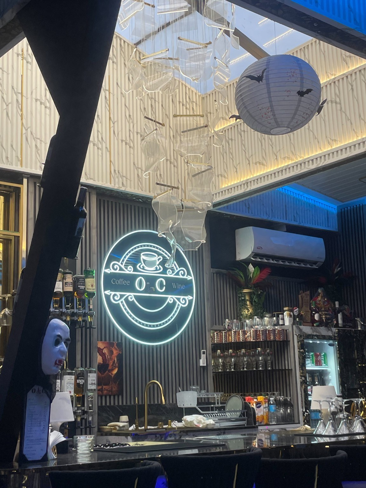
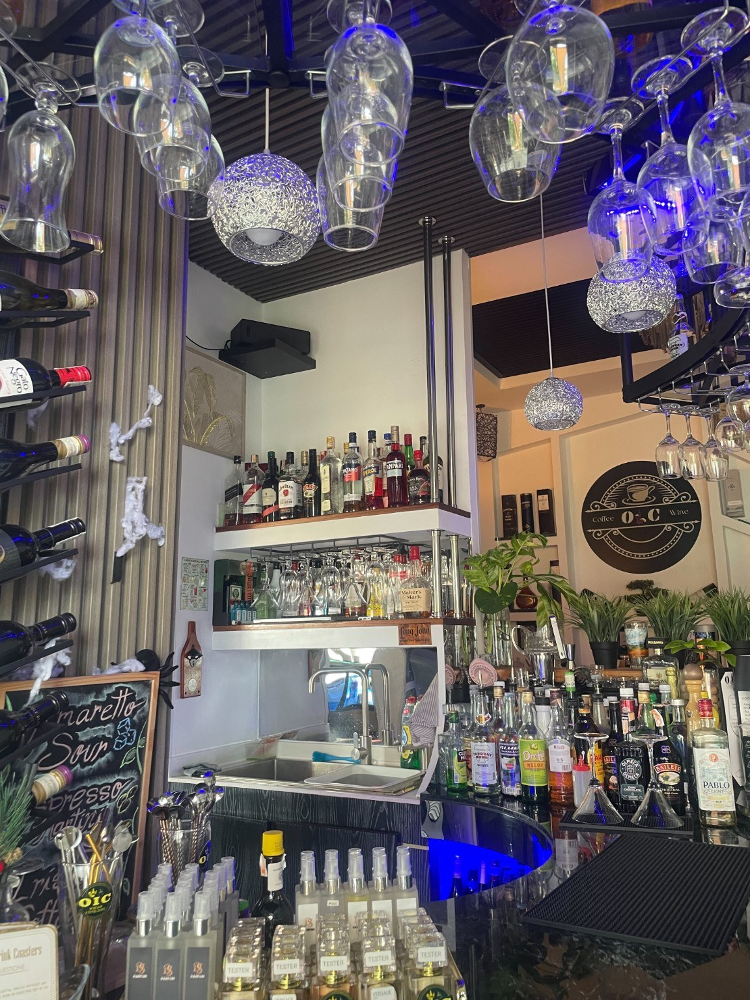

Comfort in a cup
Espresso-style favourites, creamy coffee drinks, and refreshing café choices for a quick break or a long catch-up.
CoffeeLattesTea
A stylish café and lounge for good coffee, sweet little treats, evening drinks, and conversations worth lingering over. Welcome to OIC.
Liloan, Cebu, Philippines


OIC Coffee & Wine brings together the comfort of a café and the mood of a modern lounge. With warm details, glowing blue accents, a well-stocked bar, and a welcoming counter, it's a place to pause, connect, and enjoy the atmosphere.
Stop in for coffee and a pastry, meet friends after a long day, or settle into the evening with a lounge drink. However you spend your time here, we hope it feels like your own little escape.
A first look at OIC's café-and-lounge experience. Please check the official Facebook page or contact the café for the latest menu, prices, and availability.
Espresso-style favourites, creamy coffee drinks, and refreshing café choices for a quick break or a long catch-up.
Pair your drink with a pastry or muffin from the display and make your coffee moment a little sweeter.
Enjoy wine and cocktails in a distinctive lounge setting with ambient lighting, music, and room to unwind.
Service features shown are descriptive, not a guarantee of current menu availability.
Real photos of the OIC space, bar, signature signage, and café treats.
For the smoothest visit, check the café's Facebook page or call ahead to confirm today's hours, especially on holidays and special occasions.
CHECK FACEBOOK UPDATESThe current schedule could not be verified reliably from the Facebook share link. Replace this with the café's confirmed hours before publishing.
Fill in the details and send your request directly to the café through WhatsApp.
Share a note about your visit, favourite drink, or what you would love to see next. This demo stores comments only on the current device; connect a shared feedback service before public launch.
SEND FEEDBACK ON FACEBOOKAfter you publish the website, update the QR code to point to its permanent public address.
Scan with your phone camera to open the website. When the site is live, replace the temporary QR with one generated for the final website URL.